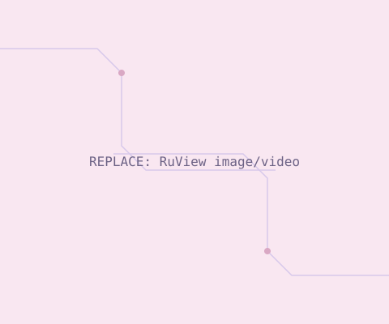

ESP32-S3Wireless SensingDashboard
RuView — WiFi Motion Detection Mesh
A 3-node ESP32-S3 system that detects motion using WiFi channel state information (CSI) and RSSI, instead of cameras — useful for privacy-preserving occupancy sensing. I built the multi-node firmware, debugged ESP-NOW peer registration and RSSI reporting, and designed the live visualisation dashboard.